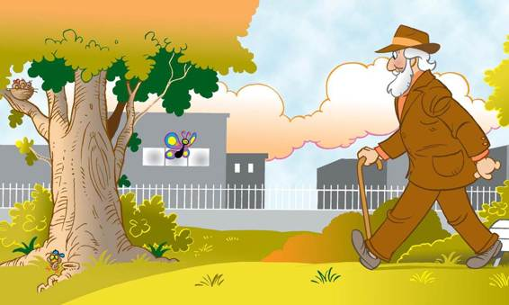

His brother and sisters gave a sigh of relief. Billy was safe for the moment. He wouldn’t starve because Mama and Papa would find him and feed him on the ground. But the ground was still a very dangerous place and it would be some time before Billy could fly.
Then the miracle happened. On the other side of the open space beside the great oak tree, an old man had been resting on a park bench. When he saw the robins attack the cat, he knew that they must be protecting one of their babies.
The kind old man rose from his bench and strolled over to the oak tree. It didn’t take him long to spot Billy hiding in the grass.